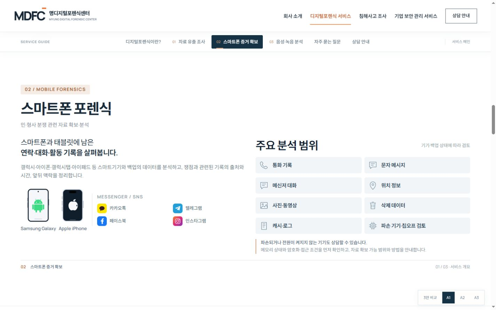
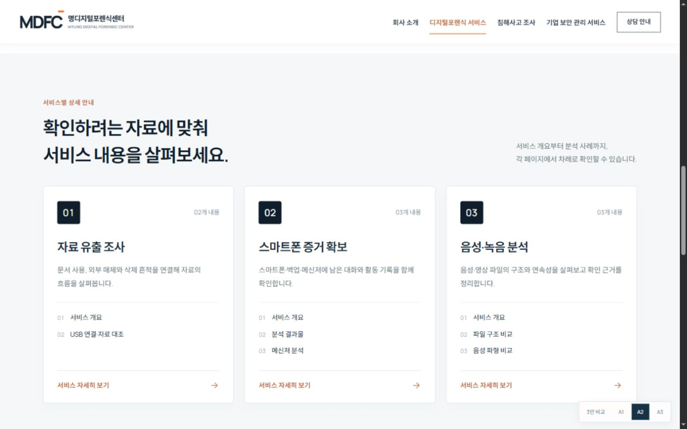
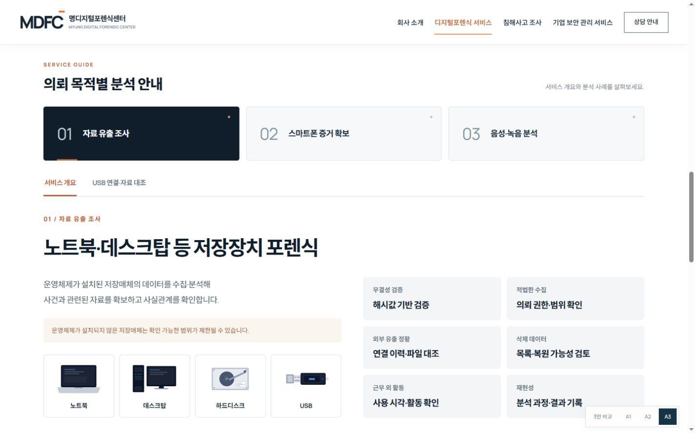

A1 CONTENT / THREE READING STYLES
내용은 유지하고,
읽는 흐름을 바꿨습니다.
A1의 서비스 내용과 기술 그래픽을 바탕으로, 챕터를 더 선명하게 나눈 세 가지 구성입니다.
진행 절차 영역을 제외하고, 마지막 상담 문구는 “지금 바로 문의하세요.”로 정리했습니다.

A2원하는 서비스만 읽기
서비스별 독립 페이지형
01·02·03을 각각 다른 페이지에서 집중해서 읽습니다.
서비스 선택 → 개별 상세 페이지 → 다음 서비스
전체 미리보기 ↗구성 방식 바로 보기 ↓